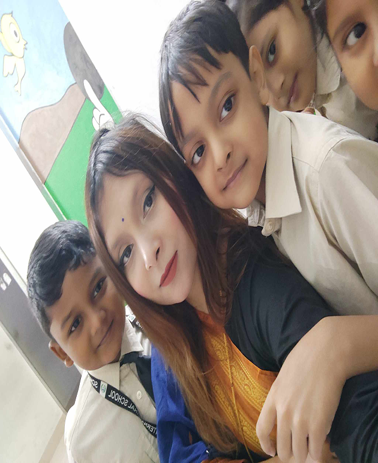
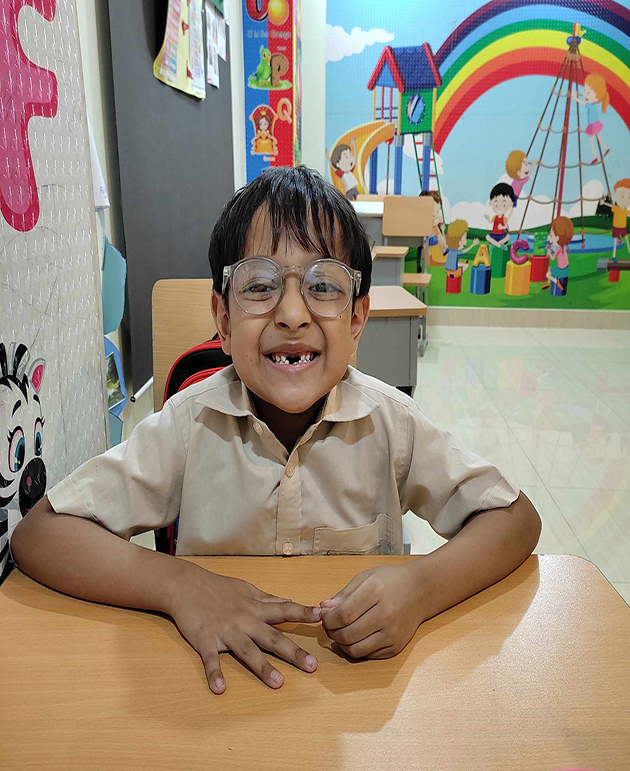
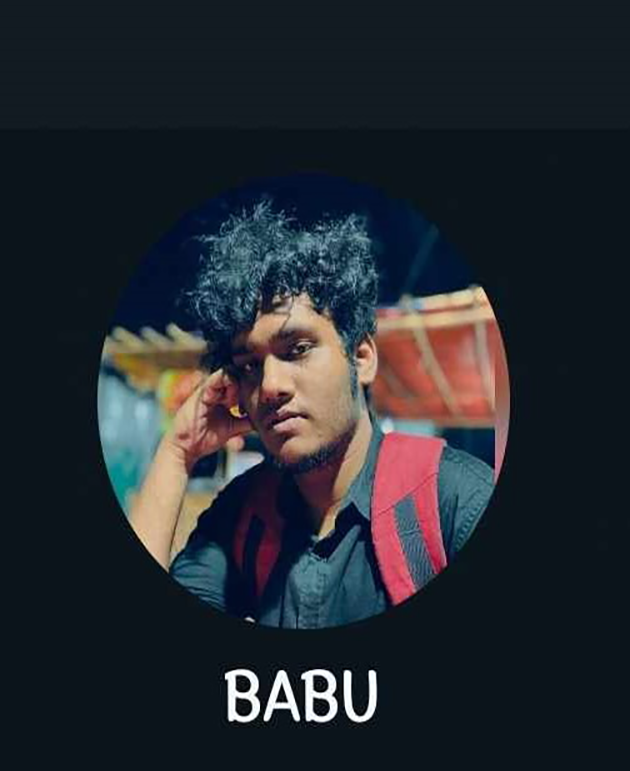
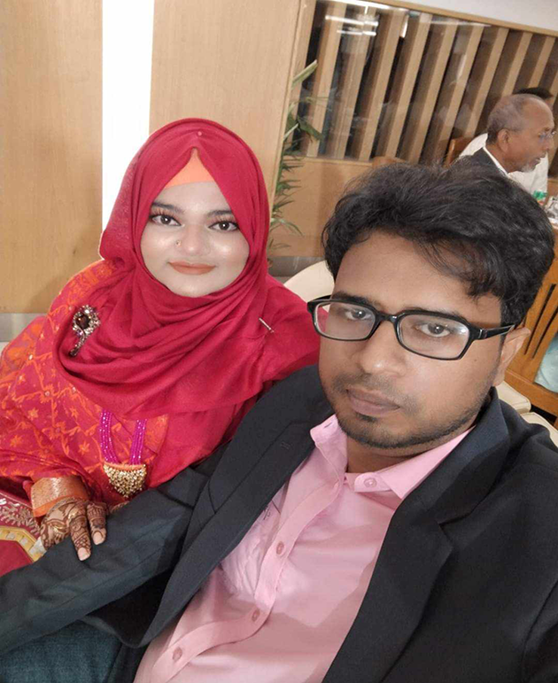
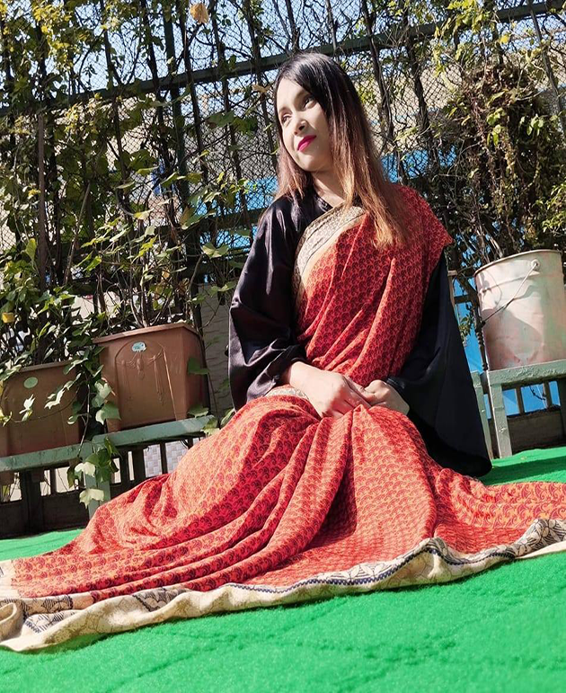

My Service

Selfy for students
I can take selfy with students to make them happy always
$200

Take pictures with fokla
When any of my students make sure that their teeth is eaten by rats so i esure by clicking pictures.
$150

Take picturs with Accounting Drummers
I can easily make him dance by showing him interest of my hand made biriyani
$420
My Premium Services

Tolarating Adiba's Boomb
I have to listen diffrent types of gosspi like "tara ekjon rekjoner jonno jonmaise " And "tara rate ghume maramari kore"
$234

Can wear sharees at 7 AM in the morning
when you want to see me wear sharee just tell me my service is here
$254
Take picturs with Accounting Drummers
I can easily make him dance by showing him interest of my hand made biriyani